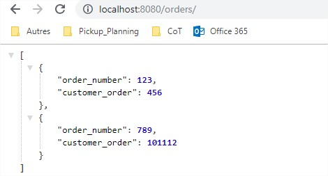

Wiremock
A la découverte de Wiremock
Créée par Jessy Lavorel via l'API de présentation Reveal.js
Qui suis-je ?
Jessy Lavorel

Qu'est-ce que WIREMOCK ?

Quand utiliser WireMock?
- Utilisation une API HTTP qui n'est pas encore prête.
- Ecriture de tests unitaires pour les classes faisant appelles à des API HTTP
- Ecriture de tests d'intégrations
d'API, ou de bout en bout.
- Dépendances d'une API HTTP externe
- Lenteurs des tests
- Accès à l'api obligatoire lors du lancement des tests

Les tests utilisant WireMock ne peuvent pas garantir la compatibilité des applications avec les API HTTP utilisées. Ces tests garantissent :
- Notre application envoie les requêtes attendues à l'API HTTP utilisée.
- Notre application fonctionne comme prévu lorsqu'elle reçoit une réponse attendue de l'API HTTP.
Running Wiremock
Dépendances maven
com.github.tomakehurst
wiremock
2.21
Démarrer le serveur
// Instantiate the server
WireMockServer wireMockServer = new WireMockServer(String host, int port);
// Start the server
wireMockServer.start();
// Stop the server
wireMockServer.stop();
Stubs
- get() , post() , put() , delete(), ...
- path (/order)
- autres paramètres :
- status
- body
- delay
- ...
WireMock.stubFor(WireMock.get("/orders/").willReturn(WireMock.aResponse().withStatus(200).withBody("[{\n" + "\t\t\"order_number\": 123,\n"
+ "\t\t\"customer_order\": 456\n" + "\t}, {\n" + "\t\t\"order_number\": 789,\n"
+ "\t\t\"customer_order\": 101112\n" + "\t}\n" + "]")));

WireMock.stubFor(WireMock.get("/orders/").willReturn(WireMock.aResponse().withStatus(200).withBodyFile("orders.json")));